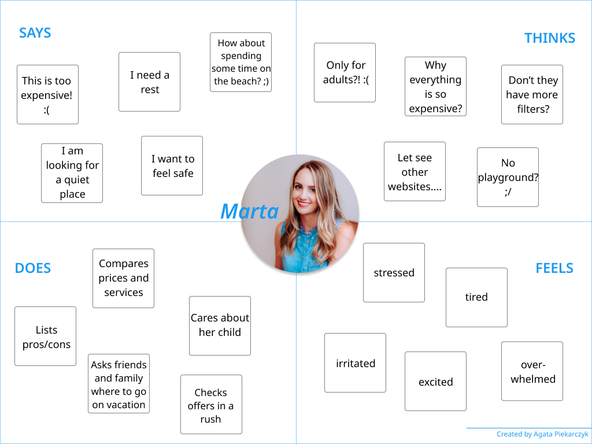
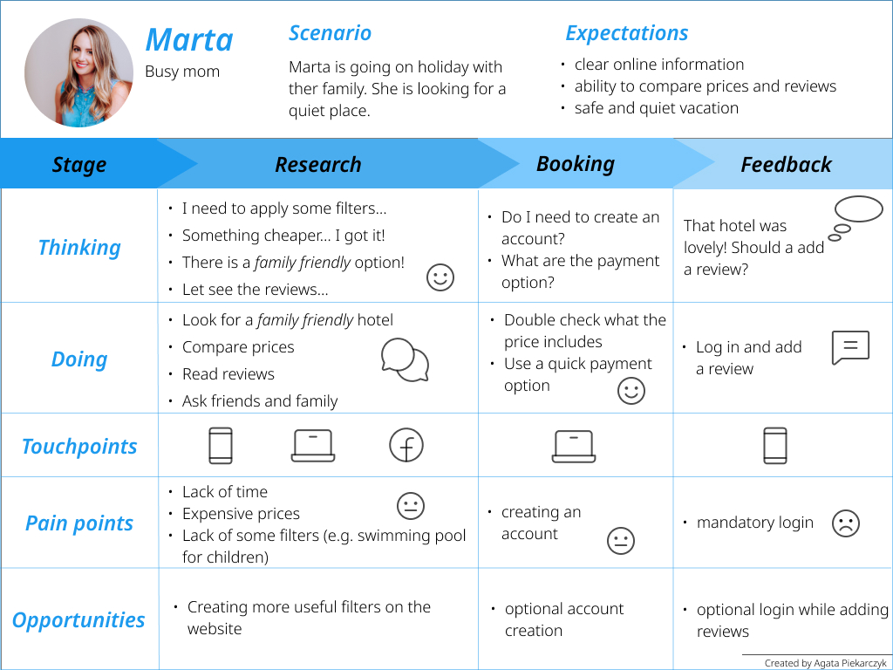

It helps team members understand the user’s mindset. We use it to:
When to use it:
Empathy Map example
It focuses on a specific customer’s interaction with a product or service. We use it to:
When to use it:
Customer Journey Map example
It generalizes the concept of customer-journey maps across user types and products. It is not tied to a specific product or service. We use it to understand a general human behavior (before a customer journey map in order to gain understanding for a general human behavior).
More info on: nngroup.com